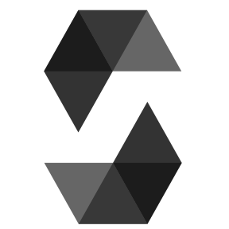
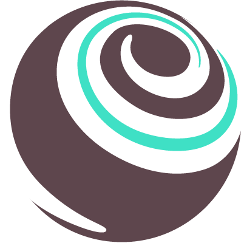
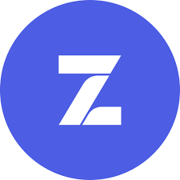
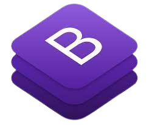
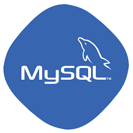
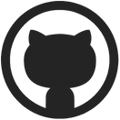
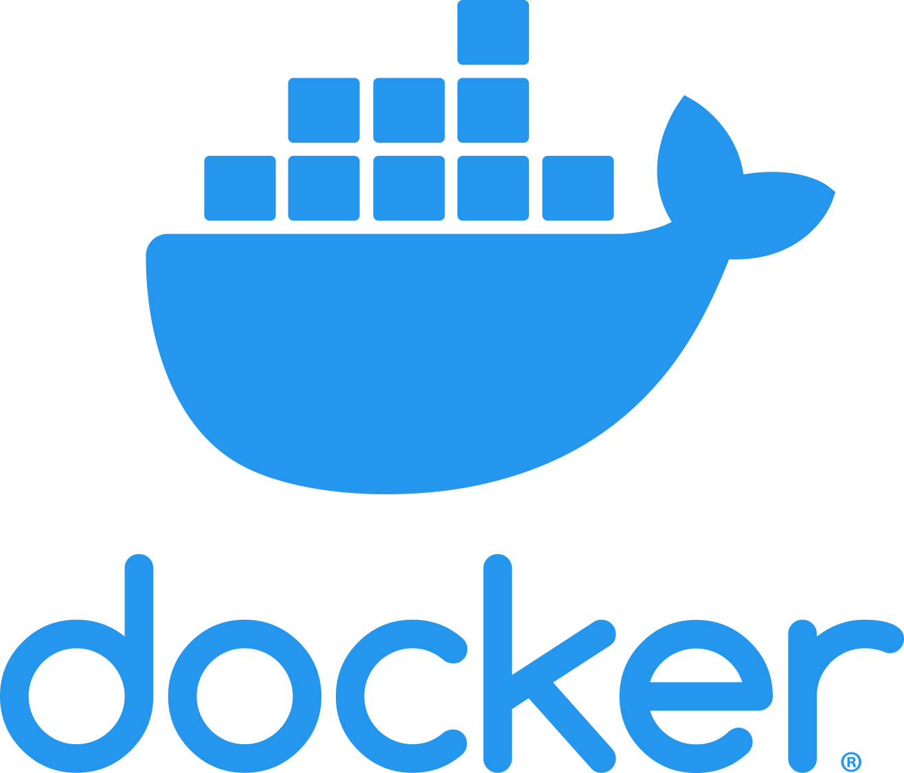
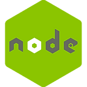
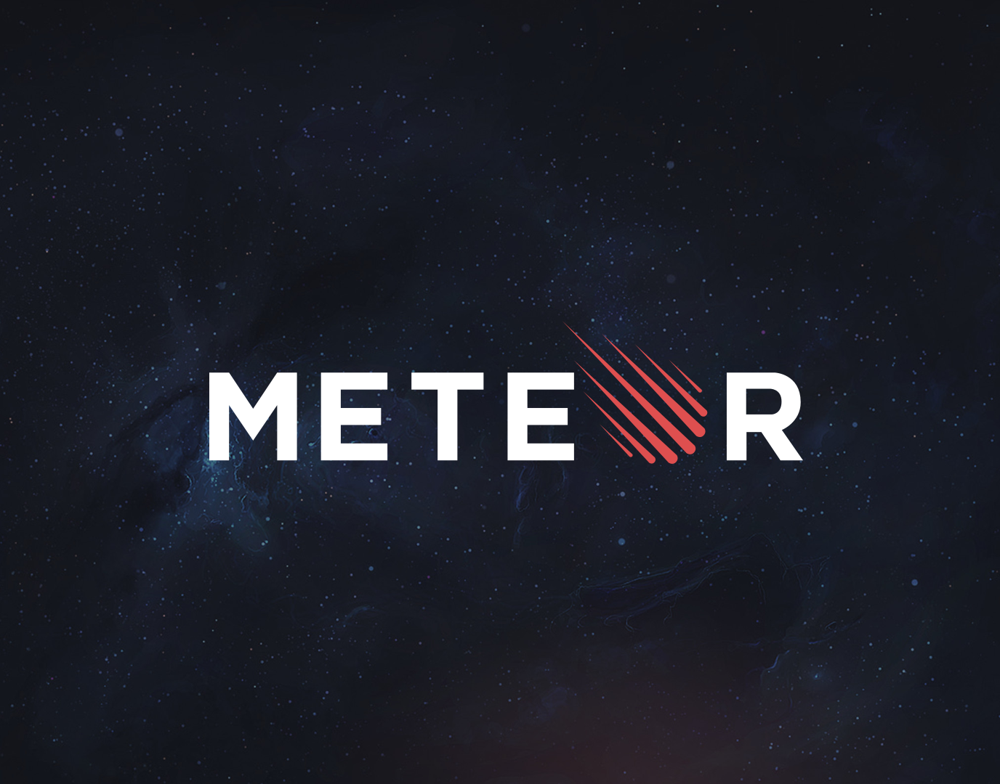

0 Project complete
Education
2013-2018
경찰행정학과
JUNGWON Univercity학점 : 4.06/4.5
2021.12-2022.10
블록체인 기반 핀테크 및 응용 SW 개발자 양성과정
경일게임아카데미교육과정:html, css, javascript, react, solidity
Tech Stack
Programming Languages

Solidity 언어를 사용해 auction smartContract 구현
웹사이트 USER, CRUD기능 구현
js대신 ts사용하면서 타입에러들을 미리 잡음

Framework/Library

Truffle을 활용해서 SmartContract 배포, test코드작성후 확인

Openzeppelin library를 사용해서 erc721, erc20 token을 발행 및 전송하는 Smart Contract 제작

React-hook, component생성
web3를 통한 rpc통신

bootstrap을 이용해 반응형 웹페이지 구현
Server

USER ,CRUD기능 구현시 db 관리

block explorer project당시 db관리

DappTunes project당시 db관리
DevOps

Collaborator를 등록하여 하나의 프로젝트를 가지고 GitHub를 통해 공동 작업

docker-compose 와 geth를 사용해 POA 방식의 Ethereum private network 구축
Environment

linux 기본명령어 사용가능

Node를 통해 서버에서 js 사용
EC2를 사용하여 웹 서버 배포
ETC/PLATFORM


JavaScript를 사용하여 웹 및 모바일 애플리케이션을 구축할 수 있는 플랫폼을 이용해 풀스택 개발
Projects
2023.03.20-2023.04.14
인원: 3명
말레이시아 영어캠프 사이트
기술 스택 : Meteor, Html, Css, Bootstrap, Javascript, Blaze, MongoDB
주요 업무, 상세역할 :
기획, 개발환경구축, 스키마 작성, 더미데이터 생성 , 주어진 템플릿으로 화면구성, 부트스트랩사용 화면위주개발
느낀점 :
전에는 스키마도 작성되어있고 더미데이터도 생성되어있고 잘 갖춰진 개발환경에서 단순 코드작성만 하면 됐었는데
이번 프로젝트에서는 나혼자 개발환경구축을 했었어야 됬다.
정말 너무너무 복잡하고 어려웠다.
분명 다 구축한거 같은데 계속 에러가 나고 ..
스키마도 잘짯다고 생각했는데 계속 수정하고 추가해야될일이 생기고..
아직 배울게 너무 많다는 걸 느꼈다
2023.02-2023.03
인원: 3명
NFT사이트
기술 스택 : Meteor, Html, Css, Bootstrap, Javascript, Blaze, MongoDB
주요 업무, 상세역할 :
메인페이지, 작가페이지+디테일페이지 , 커뮤니티페이지+디테일페이지, 마이페이지
작가가입페이지, 커뮤니티 가입페이지, 나의 커뮤니티 보기페이지 화면과 필요한 전체기능 개발
느낀점 :
비록 코드는 리팩토링이 필요한 잘 정돈되지 않는 코드라 할지라도 내가 처음으로 화면부터 백까지 만들어본 프로젝트였다.
처음 페이지네이션이라든지 sort, category기능을 구현해봤고 db와의 통신까지 풀스택개발을 했었는데
물론 처음에는 너무어려웠지만 계속 페이지들을 쳐내가며 반복해서 만들었을때는 많이 익숙해지고
첨보다 발전된 실력에 뿌듯했다.
또 이 프로젝트를 하면서 시간가는줄 모르고 재밌게 한 것 같다.
아직 많이 부족하지만 이 프로젝트를 통해 많이 성장한 것 같다.
2023.01.18-2023.02.03
인원: 3명
서울예대 프로젝트
기술 스택 : Meteor, Html, Css, Bootstrap, Javascript
주요 업무, 상세역할 : 서울예대와 캘리포니아주립대 샌디에이고(UCSD) 예술가들의 몰입형 텔레마틱 콘서트를 기반으로 한
국제적 협연 음악 공연을 크리버스 메타버스 플랫폼에서 진행한 프로젝트이다
템플릿선정, css, 부트스트랩사용 화면위주개발, pm역할
느낀점 : 비록 기능은 없는 단순 화면위주개발 프로젝트였지만
상당한 시간이 걸렸고 첨부터 기획을 잘 세우고 가지 않으면
삥삥돌아가게 된다는걸 느꼇다..
또 비록 부족하지만 클라이언트, 개발팀, 마케팅팀사이에서 pm역할을 하면서
그냥 개발보다 communication이 상당히 어렵고 중요하다는걸 느꼇다
2022.08.22-2022.09.27
인원: 5명
기술 스택 : JavaScript, TypeScript, Nodejs, React, web3, solidity, docker, mongoDB
주요 업무, 상세역할 : Auction contract, 댓글CRUD만들기
느낀점 : DappTunes NFT마켓만들기 프로젝트에서 auction contract를 맡게 되었는데 그동안 배웠던 solidity언어를 사용해서
프로젝트에서 처음 contract를 만들어보는거라 여러참고자료들을 많이 찾아보고 도움을 받았다.
하지만 참고자료는 기본적인것만 나와있기도했고 기업에서 요구한 기능들을 만들기에는 참고자료의 코드로는 부족해서
많이 생각하고 고민하면서 직접 몸으로 부딪혀서 코드를 짯고 그로인해 많이 성장한것 같다.
2022.07.04-2022.07.08
인원: 1명
Block Explorer만들기
기술 스택 : JavaScript, React, web3, Sequelize, geth
주요 업무, 상세역할 : 블록체인과 관련된 모든 정보를 실시간으로 확인할 수 있는 block explorer구현
느낀점 :
sequelize를 처음 사용해보기도 했고
react component, react-hook부분도 조금 어렵다라고 생각하고 있는 부분이여서 내가 혼자 완성할수있을지 좀 걱정이었지만 하나하나
천천히 구현해보면서 내가 원하는정보가 어떻게 통신이되서 화면에서 볼수있는지 알수있는 시간이 되었다.
2022.05.19-2022.06.08
인원: 4명
개발자키우기 게임만들기
기술 스택 : JavaScript, Typescript, Sequelize, React, React-saga
주요 업무, 상세역할 : market, 방치경험치 기능 구현
느낀점 : 처음에 키우기게임을 만든다는 아이템에 끌려서 팀에 들어가게 되었다.
이번 프로젝트는 다른프로젝트들과는 다르게 기획도 중요해서 처음에 팀원들끼리 소통하는 시간이 많았는데 우선 처음부터
팀워크가 좋았고
또 서로 어려워하는부분에 도움도 주면서 더 많은 의사소통으로인해 팀워크가 점점 향상되어서 좋은 작업물이 나올수 있었다.
특히 이해가 잘가지 않던 redux-saga에 대해서 많은 공부가 되었다.
2022.05.19-2022.06.08
인원: 2명
홈페이지 만들기(user, crud)
기술 스택 : HTML, CSS, JavaScript, Nodejs, MYSQL
주요 업무, 상세역할 : user, crud기능 만들기
느낀점 : 처음팀장을 맡았던 프로젝트였다.
front에서 back으로 요청을 보내고 back은 db와 통신해 결과물을 front로 보내서 화면에 뿌려주는 과정을 코드로 짜보는
작업이었는데 처음으로 내손으로 만든 결과물이 생기고 그게 눈에 보이니 점점 욕심도 커졌다.
물론 기능은 완성은 했지만 좀더 계획적으로 시간분배를 잘했더라면
더 좋은 결과물이 나오지 않았을까 아쉬움도 큰 프로젝트였다.